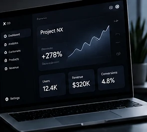

Operational platform
Role-based software for workflows that are currently split across spreadsheets, messages and manual follow-up.
Discover→Model→Build→Measure
We do not publish fictional clients or invented performance numbers. This page shows the kinds of systems we are equipped to deliver and the evidence we expect every future case study to contain.

Each pattern combines product thinking, interface design and engineering around a concrete operational need.
Role-based software for workflows that are currently split across spreadsheets, messages and manual follow-up.
A responsive platform that turns a fragmented enquiry, booking, account or service process into one clear experience.
AI embedded at a specific decision or content step, with structured outputs, review points and operational fallbacks.
A focused mobile experience connected to the same secure data and business rules as the wider platform.
When client-approved work is published, every case study should make these four things clear.
Who the product serves and which workflow or business condition mattered.
The user, technical, operational or commercial limits that shaped the solution.
What was built, why it was structured that way and what trade-offs were made.
Verified outcomes, user feedback or measurable changes — never fabricated numbers.
What was learned and how the product can evolve after launch.
Start with the operational problem and success criteria. The technology should follow from there.